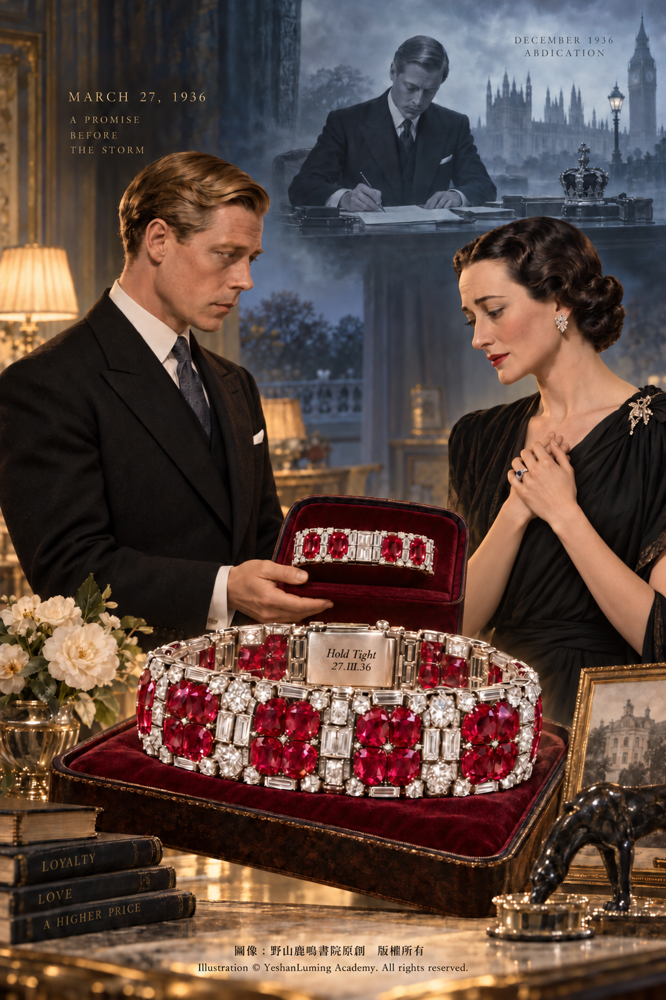
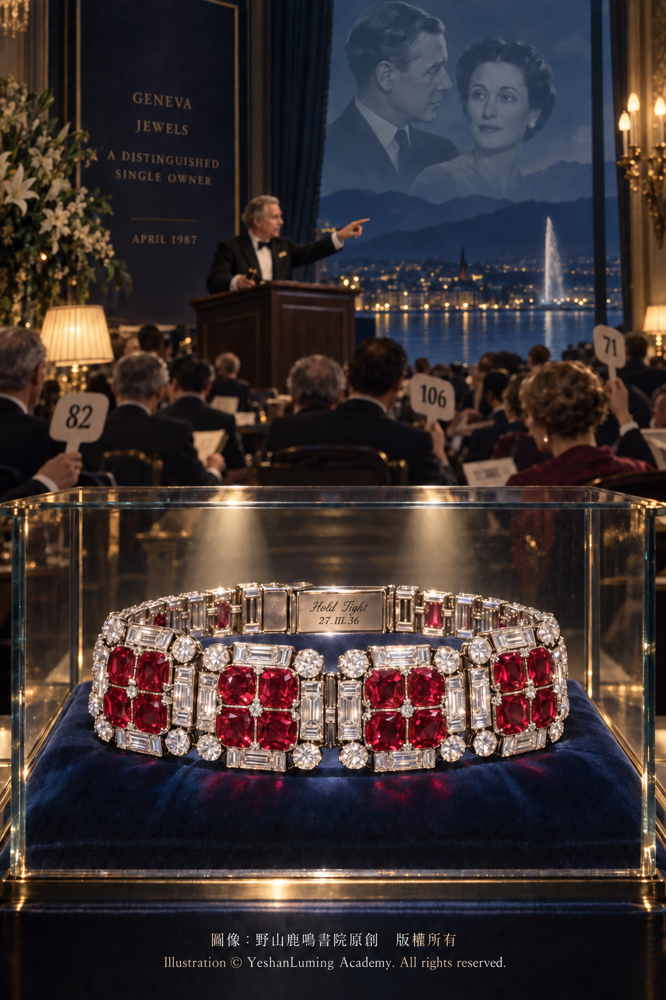

溫莎公爵夫人的「Hold Tight」紅寶石手鍊 · 王位風暴前的紅色誓言The Duchess of Windsor’s “Hold Tight” Ruby Bracelet · A Crimson Vow Before the Storm over the Throne
The World of Gemstones · Ruby SeriesThe Duchess of Windsor’s “Hold Tight” Ruby Bracelet · A Crimson Vow Before the Storm over the Throne
The World of Gemstones · Ruby Series溫莎公爵夫人的「Hold Tight」紅寶石手鍊 · 王位風暴前的紅色誓言
寶石世界·紅寶石篇
寶石世界·紅寶石篇（113）The World of Gemstones · Ruby Series (113)
1936年，是英國王室歷史上最動盪的年份之一。
這一年年初，英王喬治五世去世，長子愛德華繼承王位，成為愛德華八世。然而，這位新國王與美國女子華里絲·辛普森（Wallis Simpson）之間的感情，也正一步步走向一場足以撼動英國君主制度的政治與憲政危機。
華里絲當時仍是出生於美國、後入籍英國的航運經紀人恩斯特·辛普森（Ernest Simpson）的妻子。她曾經有過一次婚姻，當時正在經歷第二段婚姻的破裂。如果愛德華八世堅持與她結婚，便不僅要面對英國王室、政府和英格蘭教會的反對，也要承受各自治領政府與社會輿論帶來的巨大壓力。
為了與華里絲結婚，愛德華最終在1936年12月退位，後來成為溫莎公爵。1937年6月3日，二人在法國舉行婚禮。這段感情後來常被人稱為「不愛江山愛美人」的典範，成為20世紀最著名的王室愛情故事之一。
然而，真實的退位危機遠比一句浪漫傳說複雜。它牽涉英國憲政制度、王室責任、宗教規範、帝國政治，以及愛德華本人對君主職責的理解。
但是，無論人們如何評價他的政治判斷，有一件事無法否認：愛德華與華里絲都把珠寶視為一種私人語言。他們用寶石、日期和銘文，記錄感情中的重要時刻。
在華里絲後來那批舉世聞名的珠寶收藏中，有一條紅寶石鑽石手鍊，具有特殊的歷史意義。
它既不是愛德華退位後的贈禮，也不是二人結婚時送給妻子的紀念品。它出現得更早——那時愛德華仍然坐在英國王位上，華里絲也仍然是恩斯特·辛普森的妻子。
這就是梵克雅寶（Van Cleef & Arpels）製作的「Hold Tight」紅寶石鑽石手鍊。
1936年3月27日前後，愛德華八世把這條手鍊送給當時仍處於婚姻關係中的華里絲。手鍊搭扣內側刻著一行簡短的銘文：
“Hold Tight 27.III.36”
其中的羅馬數字代表1936年3月27日。
1936年，是英國王室歷史上最動盪的年份之一。
這一年年初，英王喬治五世去世，長子愛德華繼承王位，成為愛德華八世。然而，這位新國王與美國女子華里絲·辛普森（Wallis Simpson）之間的感情，也正一步步走向一場足以撼動英國君主制度的政治與憲政危機。
華里絲當時仍是出生於美國、後入籍英國的航運經紀人恩斯特·辛普森（Ernest Simpson）的妻子。她曾經有過一次婚姻，當時正在經歷第二段婚姻的破裂。如果愛德華八世堅持與她結婚，便不僅要面對英國王室、政府和英格蘭教會的反對，也要承受各自治領政府與社會輿論帶來的巨大壓力。
為了與華里絲結婚，愛德華最終在1936年12月退位，後來成為溫莎公爵。1937年6月3日，二人在法國舉行婚禮。這段感情後來常被人稱為「不愛江山愛美人」的典範，成為20世紀最著名的王室愛情故事之一。
然而，真實的退位危機遠比一句浪漫傳說複雜。它牽涉英國憲政制度、王室責任、宗教規範、帝國政治，以及愛德華本人對君主職責的理解。
但是，無論人們如何評價他的政治判斷，有一件事無法否認：愛德華與華里絲都把珠寶視為一種私人語言。他們用寶石、日期和銘文，記錄感情中的重要時刻。
在華里絲後來那批舉世聞名的珠寶收藏中，有一條紅寶石鑽石手鍊，具有特殊的歷史意義。
它既不是愛德華退位後的贈禮，也不是二人結婚時送給妻子的紀念品。它出現得更早——那時愛德華仍然坐在英國王位上，華里絲也仍然是恩斯特·辛普森的妻子。
這就是梵克雅寶（Van Cleef & Arpels）製作的「Hold Tight」紅寶石鑽石手鍊。
1936年3月27日前後，愛德華八世把這條手鍊送給當時仍處於婚姻關係中的華里絲。手鍊搭扣內側刻著一行簡短的銘文：
“Hold Tight 27.III.36”
其中的羅馬數字代表1936年3月27日。

Click to enlarge
“Hold Tight”直譯可以理解為「抓緊」、「堅持住」或「不要放手」。據相關歷史資料記載，這是愛德華與華里絲在私人通信中經常使用的一句話。在兩人前途尚不明朗的時候，它既是一句安慰，也是一個希望彼此堅持下去的承諾。
愛德華八世把這條紅寶石手鍊送給華里絲時，公開的退位危機尚未全面爆發。愛德華仍然是英國國王，華里絲的第二段婚姻也尚未正式結束。沒有人能夠確定他們的感情最終會走向何方，更沒有人知道，幾個月後英國將因為這段關係陷入一場王位危機。
正因如此，這句“Hold Tight”後來才顯得格外意味深長。
它不是退位完成之後的勝利宣言，而是在一切尚未確定之前留下的私人暗語。當時的愛德華或許還沒有完全預見自己將失去王位，但他已經用珠寶向華里絲表示：無論前方出現什麼變化，他都希望兩人能夠堅持下去，不要放開彼此。
從珠寶藝術角度來看，這條手鍊同樣具有鮮明的時代特徵。
根據現有珠寶史資料，手鍊鑲嵌40顆體量可觀的紅寶石。這些紅寶石被組合成具有秩序感的幾何單元，周圍配以圓形及長梯形切割鑽石，形成紅與白之間鮮明而莊重的色彩對比。
紅寶石的濃郁色彩構成手鍊的視覺中心，鑽石則像一道道明亮的邊界，使每一組紅寶石都能在光線下清楚地顯現出來。
這種設計並不依靠單顆巨大紅寶石吸引目光，而是依靠多顆寶石之間的整體協調，形成連續而有節奏的紅色光帶。
對於一件由多顆彩色寶石構成的高級珠寶而言，顏色匹配是一項極為重要的工藝要求。紅寶石即使來自同一產區，也可能在色調、飽和度、明度、透明度和螢光反應方面存在差異。當數十顆紅寶石排列在同一件珠寶上時，任何一顆顏色過深、過淺、偏紫或偏橙，都可能破壞整件作品的視覺平衡。
因此，工匠不僅需要考慮單顆紅寶石的品質，也要從大量寶石中挑選彼此接近的材料，再根據尺寸、形狀和色彩進行分組排列。
「Hold Tight」手鍊所展現的價值，正在於這種整體協調。40顆紅寶石與周圍鑽石共同構成一件完整作品，而不是彼此孤立的寶石集合。
部分歷史資料將這些紅寶石記載為緬甸紅寶石。緬甸紅寶石長期以濃郁而富有生命力的紅色聞名，也一直是歐洲高級珠寶商極為重視的材料。
不過，由於目前公開資料中沒有這40顆紅寶石的完整現代實驗室報告，我們不能進一步斷言它們全部來自緬甸莫谷，也不能把「無燒」、「鴿血紅」或某種特定的螢光強度，當作已經獲得證實的鑑定結論。
對這件歷史珠寶而言，最值得重視的寶石學特徵，是多顆紅寶石在色彩、尺寸和整體視覺效果上所達到的協調，以及梵克雅寶在20世紀30年代所展現的高級珠寶設計與製作能力。
這件作品誕生於梵克雅寶藝術風格迅速成熟的年代。當時，藝術總監Renée Puissant與設計師René-Sim Lacaze，共同塑造了梵克雅寶在兩次世界大戰之間的重要設計語言。他們重視幾何秩序、線條節奏、寶石色彩與佩戴時的動態效果，使梵克雅寶逐漸形成兼具裝飾藝術精神與柔美流動感的獨特風格。
目前尚缺乏足夠的品牌原始檔案，證明「Hold Tight」手鍊完全出自某一位設計師之手。因此，將它視為這一時期梵克雅寶巴黎工坊共同創作的代表性作品，是更為穩妥的說法。
在1936年隨後的幾個月裡，愛德華又陸續為華里絲購置了其他幾件重要珠寶，其中包括梵克雅寶的紅寶石鑽石項鍊和雙羽毛胸針。
這些珠寶雖然同樣使用紅寶石與鑽石，卻是彼此獨立的作品。尤其是那條為華里絲四十歲生日準備的紅寶石項鍊，據記載鑲有123顆經過精心配色的緬甸紅寶石，其規模與結構均不同於「Hold Tight」手鍊。
1936年12月10日，愛德華八世簽署退位文件。第二天，他透過廣播向英國及全世界發表退位演說，表示自己無法在沒有心愛女子支持的情況下履行國王職責。
退位後，他獲封溫莎公爵。華里絲與恩斯特·辛普森的離婚完成後，二人於1937年6月3日在法國結婚。此後，他們主要生活在歐洲大陸。
「Hold Tight」手鍊也跟隨華里絲走過了此後數十年的人生。它不僅是一件昂貴珠寶，更像一封以紅寶石和鑽石寫成、被她佩戴在手腕上的私人書信。
1972年，溫莎公爵在巴黎去世。1986年4月24日，溫莎公爵夫人也在巴黎辭世。
1987年4月2日至3日，蘇富比在日內瓦舉行「溫莎公爵夫人珠寶」專場拍賣。這批珠寶記錄了二人數十年的共同生活，拍賣也因此吸引了來自世界各地的收藏家、珠寶商與媒體。
整場拍賣取得了遠遠超出預期的成交總額，成為當時世界上最轟動的單一藏家珠寶拍賣之一。拍賣所得依照公爵夫人的安排，捐給巴黎巴斯德研究院。
在這場拍賣中，「Hold Tight」紅寶石鑽石手鍊據當時報道以約486,000美元成交。這已經是一個遠遠超出普通珠寶材料價值的價格，反映出收藏家對其王室來源、梵克雅寶品牌、藝術設計與歷史銘文的共同重視。

Click to enlarge
從寶石學角度看，這條紅寶石手鍊展示了多顆紅寶石之間嚴格的色彩協調；從珠寶藝術角度看，它代表了20世紀30年代巴黎高級珠寶的設計水準；從歷史角度看，它則保存了一段發生在英國王位危機前夕的私人情感。
紅寶石在許多文化中象徵熱情、勇氣、權力與承諾。對愛德華和華里絲而言，這40顆紅寶石還承載著另一層更加直接的含義——堅持下去，不要放手。
人們可以對愛德華八世的退位作出不同評價。有人把它看成一段以王位交換愛情的傳奇，也有人認為這是君主對公共責任的放棄。歷史不必只有一種解釋，愛情也不能掩蓋政治與憲政問題的複雜性。
但是，當我們重新觀看這條手鍊時，仍然能夠感受到1936年3月那個尚未確定的時刻：一位剛剛登上王位的國王，把一條鑲滿紅寶石的手鍊送給一位仍處於婚姻關係中的女子，並在搭扣內側留下兩個簡短的英文單字——
Hold Tight。
幾個月後，王位失去了，兩人的生活也永遠改變了。可是這句被刻在手鍊上的私人低語，卻隨著紅寶石保存了下來。
它沒有預言退位，卻見證了退位之前的選擇；它不是勝利之後的紀念，而是風暴來臨之前的一句承諾。
這或許正是「Hold Tight」紅寶石手鍊最令人難忘的地方。
溫莎公爵夫人「Hold Tight」紅寶石手鍊主要資料
名稱： 「Hold Tight」紅寶石鑽石手鍊
英文名稱： The “Hold Tight” Ruby and Diamond Bracelet
珠寶品牌： 梵克雅寶（Van Cleef & Arpels）
製作年代： 1936年
贈送者： 愛德華八世
受贈者： 華里絲·辛普森
銘文日期： 1936年3月27日
主要寶石： 40顆紅寶石及多顆鑽石
紅寶石來源： 部分歷史資料記載為緬甸紅寶石；具體礦區及處理狀態缺乏公開的現代實驗室報告
鑽石切工： 圓形及長梯形切割
設計特徵： 紅寶石分組排列於鑽石框架之中，強調色彩匹配與幾何秩序
銘文： “Hold Tight 27.III.36”
銘文含義： 「堅持住／不要放手，1936年3月27日」
拍賣時間： 1987年4月2日至3日
拍賣行： 日內瓦蘇富比
成交價格： 據當時報道約486,000美元
歷史意義： 記錄愛德華八世退位危機爆發前，他與華里絲在前途未定時留下的私人承諾
（未完待續）
The year 1936 was one of the most turbulent in the history of the British royal family.
Early that year, King George V died, and his eldest son Edward succeeded to the throne as King Edward VIII. Yet the new king’s relationship with an American woman named Wallis Simpson was also moving steadily toward a political and constitutional crisis powerful enough to shake the British monarchy.
At the time, Wallis was still the wife of Ernest Simpson, an American-born shipbroker who had later become a naturalized British citizen. She had already been married once, and her second marriage was then beginning to break down. If Edward VIII insisted on marrying her, he would face opposition not only from the royal family, the government, and the Church of England, but also from the governments of the Dominions and from public opinion.
Determined to marry Wallis, Edward eventually abdicated in December 1936 and later became the Duke of Windsor. On June 3, 1937, the couple were married in France. Their relationship later came to be celebrated as a classic story of a man who chose love over a throne, becoming one of the most famous royal romances of the 20th century.
The real abdication crisis, however, was far more complicated than this romantic legend suggests. It involved Britain’s constitutional system, royal duty, religious conventions, imperial politics, and Edward’s own understanding of the responsibilities of a monarch.
Yet regardless of how people judge his political decisions, one fact remains undeniable: Edward and Wallis both regarded jewelry as a private language. Through gemstones, dates, and inscriptions, they recorded important moments in their relationship.
Among the world-famous jewels Wallis later assembled was a ruby and diamond bracelet with a particularly significant place in history.
It was neither a gift presented after Edward’s abdication nor a keepsake given to his wife at the time of their marriage. It appeared much earlier—when Edward was still seated upon the British throne and Wallis was still the wife of Ernest Simpson.
This was the “Hold Tight” ruby and diamond bracelet created by Van Cleef & Arpels.
Around March 27, 1936, Edward VIII presented the bracelet to Wallis, who was still legally married at the time. Inside its clasp was a brief inscription:
“Hold Tight 27.III.36”
The Roman numerals represent the date March 27, 1936.
The year 1936 was one of the most turbulent in the history of the British royal family.
Early that year, King George V died, and his eldest son Edward succeeded to the throne as King Edward VIII. Yet the new king’s relationship with an American woman named Wallis Simpson was also moving steadily toward a political and constitutional crisis powerful enough to shake the British monarchy.
At the time, Wallis was still the wife of Ernest Simpson, an American-born shipbroker who had later become a naturalized British citizen. She had already been married once, and her second marriage was then beginning to break down. If Edward VIII insisted on marrying her, he would face opposition not only from the royal family, the government, and the Church of England, but also from the governments of the Dominions and from public opinion.
Determined to marry Wallis, Edward eventually abdicated in December 1936 and later became the Duke of Windsor. On June 3, 1937, the couple were married in France. Their relationship later came to be celebrated as a classic story of a man who chose love over a throne, becoming one of the most famous royal romances of the 20th century.
The real abdication crisis, however, was far more complicated than this romantic legend suggests. It involved Britain’s constitutional system, royal duty, religious conventions, imperial politics, and Edward’s own understanding of the responsibilities of a monarch.
Yet regardless of how people judge his political decisions, one fact remains undeniable: Edward and Wallis both regarded jewelry as a private language. Through gemstones, dates, and inscriptions, they recorded important moments in their relationship.
Among the world-famous jewels Wallis later assembled was a ruby and diamond bracelet with a particularly significant place in history.
It was neither a gift presented after Edward’s abdication nor a keepsake given to his wife at the time of their marriage. It appeared much earlier—when Edward was still seated upon the British throne and Wallis was still the wife of Ernest Simpson.
This was the “Hold Tight” ruby and diamond bracelet created by Van Cleef & Arpels.
Around March 27, 1936, Edward VIII presented the bracelet to Wallis, who was still legally married at the time. Inside its clasp was a brief inscription:
“Hold Tight 27.III.36”
The Roman numerals represent the date March 27, 1936.
Click to enlarge
The words “Hold Tight” may be understood as “hold on,” “remain steadfast,” or “do not let go.” According to historical accounts, this was an expression Edward and Wallis frequently used in their private correspondence. At a time when their future remained uncertain, it was both a reassurance and a promise that they should persevere together.
When Edward VIII gave Wallis this ruby bracelet, the public abdication crisis had not yet fully erupted. Edward was still King of the United Kingdom, and Wallis’s second marriage had not formally ended. No one could know where their relationship would ultimately lead, much less foresee that Britain would be plunged into a crisis over the throne only a few months later.
For precisely this reason, the words “Hold Tight” would later acquire such profound meaning.
They were not a declaration of triumph made after the abdication, but a private message left before anything had been decided. Edward may not yet have fully foreseen that he would lose his throne, but through this jewel he had already told Wallis that, whatever lay ahead, he hoped they would endure and never let go of one another.
From the perspective of jewelry art, the bracelet also possesses the unmistakable character of its era.
According to existing jewelry histories, the bracelet is set with 40 substantial rubies. These stones are arranged in orderly geometric units and surrounded by circular- and baguette-cut diamonds, creating a vivid yet dignified contrast between red and white.
The saturated color of the rubies forms the visual heart of the bracelet, while the diamonds resemble luminous borders, allowing each group of rubies to stand out clearly in the light.
Rather than relying upon a single enormous ruby to attract attention, the design achieves its effect through the harmony among many stones, creating a continuous and rhythmically ordered band of red.
For a high-jewelry creation composed of numerous colored gemstones, color matching is an extremely demanding aspect of craftsmanship. Even rubies from the same source may differ in hue, saturation, tone, transparency, and fluorescence. When dozens of rubies are placed together in a single jewel, any stone that is too dark, too pale, overly purple, or excessively orange may disturb the visual balance of the entire composition.
The craftsmen therefore had to consider more than the quality of each individual ruby. They also needed to select closely compatible stones from a much larger group and arrange them according to size, shape, and color.
The distinction of the “Hold Tight” bracelet lies precisely in this overall harmony. Its 40 rubies and surrounding diamonds form a unified work of art rather than a collection of isolated gemstones.
Some historical sources describe these stones as Burmese rubies. Burmese rubies have long been celebrated for their rich and vibrant red color and have traditionally been among the materials most highly prized by European jewelers.
However, because no complete modern laboratory reports for the 40 rubies have been made publicly available, we cannot state with certainty that they all originated in Mogok, Myanmar. Nor can terms such as “unheated,” “pigeon blood,” or any particular degree of fluorescence be presented as confirmed gemological findings.
For this historic jewel, the most important gemological feature is the harmony achieved among the rubies in color, size, and overall visual effect, together with the exceptional design and craftsmanship demonstrated by Van Cleef & Arpels during the 1930s.
The bracelet was created during a period in which the artistic language of Van Cleef & Arpels was rapidly maturing. At the time, artistic director Renée Puissant and designer René-Sim Lacaze together helped shape the Maison’s important design vocabulary between the two world wars. They emphasized geometric order, rhythmic lines, gemstone color, and the dynamic effect of a jewel when worn, gradually giving Van Cleef & Arpels a distinctive style that combined the spirit of Art Deco with an elegant sense of movement.
At present, there is insufficient original archival evidence from the Maison to establish that the “Hold Tight” bracelet was entirely the work of one particular designer. It is therefore more prudent to regard it as a representative creation produced collectively by the Van Cleef & Arpels workshop in Paris during this period.
During the months that followed in 1936, Edward acquired several other important jewels for Wallis, including a Van Cleef & Arpels ruby and diamond necklace and a double-feather brooch.
Although these jewels likewise featured rubies and diamonds, they were separate creations. The ruby necklace prepared for Wallis’s 40th birthday, in particular, was reportedly set with 123 carefully matched Burmese rubies and differed greatly from the “Hold Tight” bracelet in both scale and construction.
On December 10, 1936, Edward VIII signed the Instrument of Abdication. The following day, in a radio address heard throughout Britain and around the world, he declared that he could not discharge his duties as king without the help and support of the woman he loved.
After his abdication, he was granted the title Duke of Windsor. Once Wallis’s divorce from Ernest Simpson was finalized, she and Edward married in France on June 3, 1937. They would thereafter spend most of their lives on the European continent.
The “Hold Tight” bracelet accompanied Wallis through the decades that followed. It was not merely an expensive jewel, but something resembling a private letter written in rubies and diamonds and worn upon her wrist.
The Duke of Windsor died in Paris in 1972. On April 24, 1986, the Duchess of Windsor also died in Paris.
On April 2 and 3, 1987, Sotheby’s Geneva conducted the celebrated sale of the Jewels of the Duchess of Windsor. The collection chronicled decades of the couple’s life together and attracted collectors, jewelers, and members of the international media from around the world.
The sale realized a total far beyond expectations and became one of the most sensational single-owner jewelry auctions of its time. In accordance with the Duchess’s arrangements, the proceeds were donated to the Pasteur Institute in Paris.
According to contemporary reports, the “Hold Tight” ruby and diamond bracelet sold at the auction for approximately US$486,000. This price already far exceeded the ordinary material value of the jewel, reflecting the importance collectors attached to its royal provenance, the Van Cleef & Arpels name, its artistic design, and its historic inscription.
Click to enlarge
From a gemological perspective, the bracelet demonstrates the rigorous color coordination required among numerous rubies. From the perspective of jewelry art, it represents the accomplishments of Parisian high jewelry during the 1930s. From a historical perspective, it preserves an intimate emotion from the eve of Britain’s abdication crisis.
In many cultures, rubies symbolize passion, courage, power, and commitment. For Edward and Wallis, these 40 rubies carried an even more immediate message—hold on, and do not let go.
People may judge Edward VIII’s abdication in different ways. Some regard it as the legendary sacrifice of a throne for love; others see it as a monarch’s abandonment of public duty. History need not have only one interpretation, and romance should not obscure the political and constitutional complexity of the crisis.
Yet when we look again at this bracelet, we can still sense the uncertainty of that moment in March 1936: a king who had only recently ascended the throne presented a ruby-covered bracelet to a woman whose marriage had not yet ended, leaving two brief English words inside its clasp—
Hold Tight.
Only a few months later, the throne was lost, and both their lives were changed forever. Yet the private whisper engraved upon the bracelet endured, preserved alongside the rubies.
It did not predict the abdication, but it witnessed the choice that preceded it. It was not a commemoration of victory, but a promise made before the storm arrived.
That may be what makes the “Hold Tight” ruby bracelet so unforgettable.
Essential Information About the Duchess of Windsor’s “Hold Tight” Ruby Bracelet
Name: “Hold Tight” Ruby and Diamond Bracelet
English Name: The “Hold Tight” Ruby and Diamond Bracelet
Jewelry House: Van Cleef & Arpels
Year Created: 1936
Presented By: Edward VIII
Recipient: Wallis Simpson
Date of Inscription: March 27, 1936
Principal Gemstones: 40 rubies and numerous diamonds
Origin of the Rubies: Some historical sources describe them as Burmese rubies; no publicly available modern laboratory reports establish their precise mining origin or treatment status
Diamond Cuts: Circular and baguette cuts
Design Characteristics: Rubies arranged in groups within diamond frames, emphasizing color matching and geometric order
Inscription: “Hold Tight 27.III.36”
Meaning of the Inscription: “Hold on / Do not let go, March 27, 1936”
Auction Dates: April 2–3, 1987
Auction House: Sotheby’s Geneva
Sale Price: Approximately US$486,000, according to contemporary reports
Historical Significance: A record of the private promise Edward VIII and Wallis made while their future remained uncertain, before the outbreak of the abdication crisis
(To be continued)